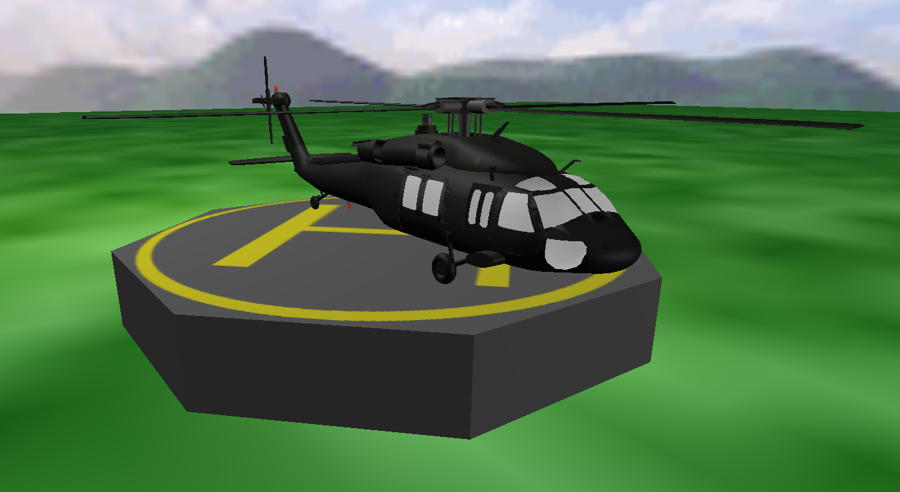
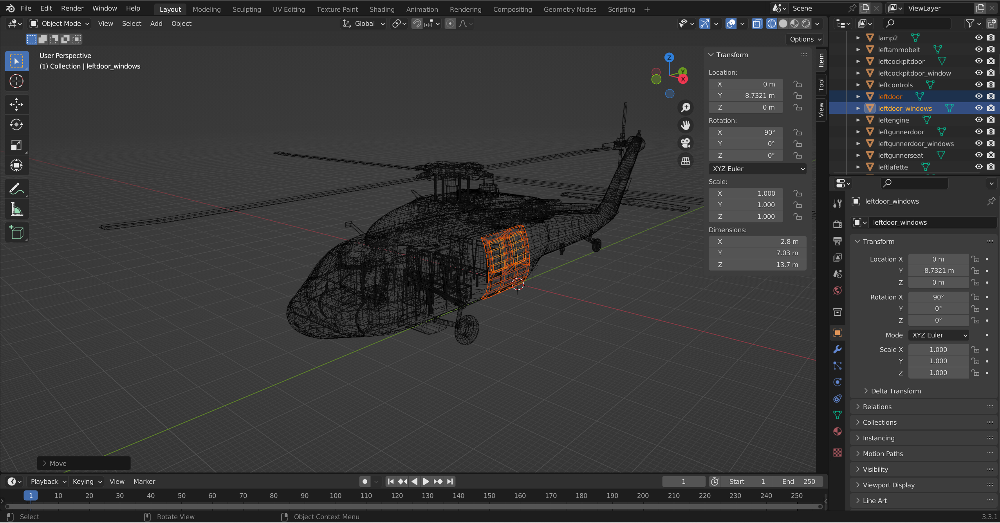
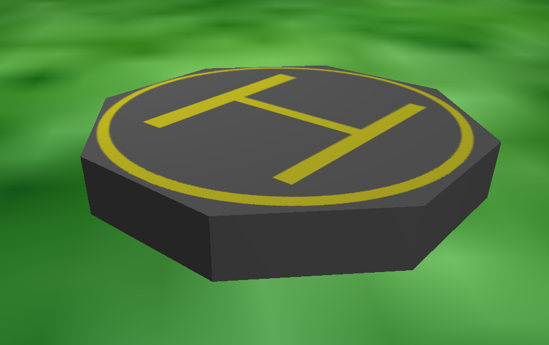
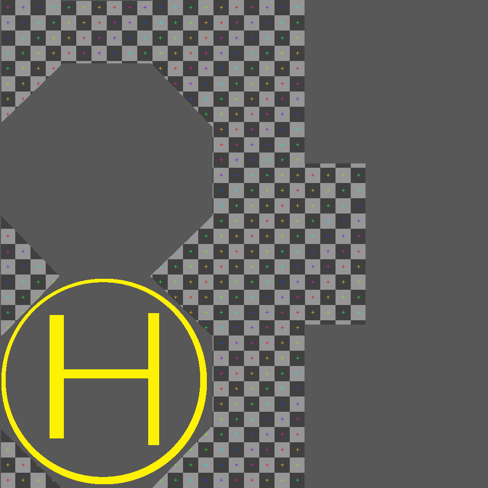
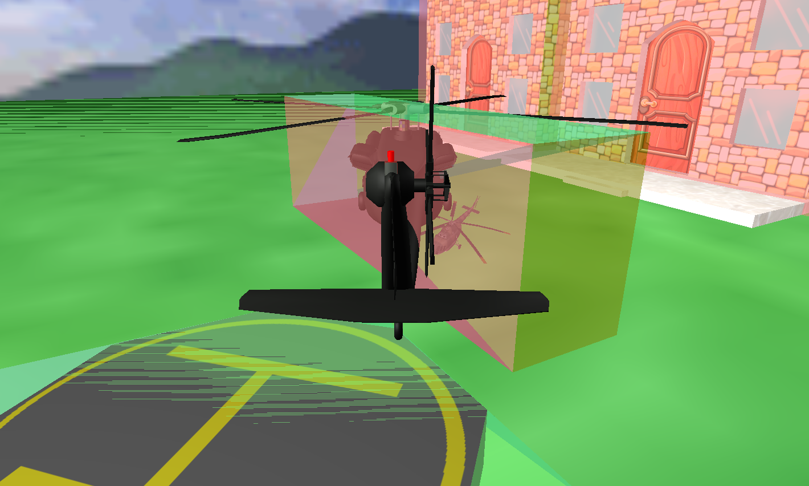

Final Project Webpage
This project features a very rough aerodynamic and physical simulation of a helicopter and parts of its control system. It accepts keyboard and mouse input and renders the scene in real time.

Features
Real Time graphics with up to 10 point lights and Blinn-Phong shading
This includes loading Wavefront object (.obj) files, and associated material (.mtl) files supporting ambient, diffuse, and specular material properties as well as texture maps for diffuse and ambient color as specified by Wavefront. This simplified asset loading process requires minimal hardcoded setup and refers most object properties to the object, material, and configuration files. The result is all objects rendered are instantiated as the class object, and any behavior at runtime is applied separately using a basic event bus (update, key, and physics actions defined in implemetations of associated abstract classes). This massively simplifies data flow and reduces programming load in the development process.
Simplified specification of multipart animations
In addition to the Wavefront object specification an additional data file may be included that can specify the inheritance structure of an object's shapes with the same name ex. (*.obj, *.cfg). This can include bounding box dimensions, pivot points for rotations, inheritance structure for hierarchical transformation, and keyframes for animation including rotation, translation, scale, and time data. This is in object-local coordinates and massively simplifies the animation and data entry process for setting up a scene using an external tool such as blender.

Shown here is the helicopter in wireframe view in blender. After manipulating the transformation of a part of the object, the resulting coordinates can be written back out into the data file. The method to edit graphically in object-local space (after converting blender's Z-up coordinates to OpenGL's Y-up system) is much simpler than trying to derive the transformations non-graphically. By this method the doors, guns, and rotors of the helicopter shown in the simulation were animated at a high level without much effort. Certain keyframes are simply defined in the configuration file, and then a behavior is defined to trigger a timed interpolation between them.
Blender can also be used to define entirely new geometry with matching texture coordinates and appropriately unwrap simple shapes into flat projections for easy asset production. For example the Helipad in the simulation was produced by hand in this way. The model and material file was exported directly from blender and loaded by the program without any nessicary modification of the data.


Using Blender's texture mapping tools, textures can even be optimized into smaller sizes to save on performace.
Axis-Aligned Bounding-Box based physics calculations
Using Axis-Aligned Bounding Boxes defined by their bottom left and top right corners, fast physics checks against multiple objects in all three dimensions can be computed every physics update and used to determine allowable directions of movement for the helicopter in motion. These are defined in the configuration and rotated and scaled with the object's transformation in order to best approximate the location of the object's collider at any given time. There is a debug shader provided that colors these boxes, transparently, according to their normals.

References
UH-60A Black Hawk engineering Simulation Program: Volume 1 - Mathematical Model -- produced by Sikorsky Aircraft for NASA in 1981
This was quite helpful in defining the physical characteristics of the helicopter for the simulation. Of particular note is the lift coefficient of each blade (CLMR) vs. blade angle of attack (AFTFMR) graph Figure 1.5.2 on page 5.1-51, and the Summary of Mass Properties Characteristics table 4.2 on page 4.8 which provides the moments of rotational inertia about the various axis as well as the weight and center of gravity under different loads.